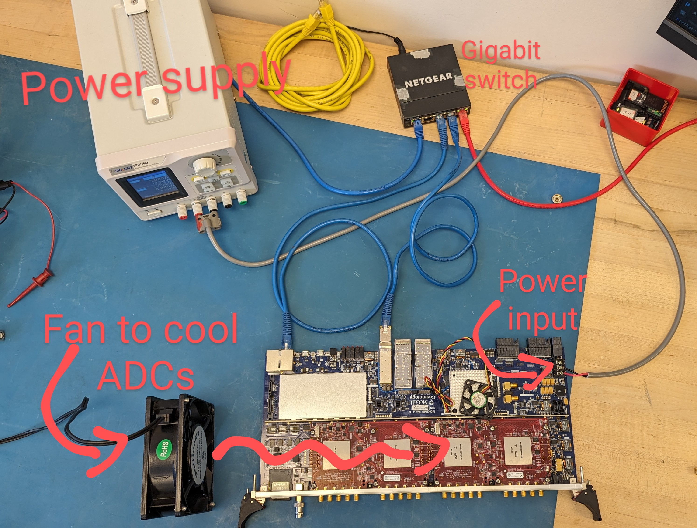
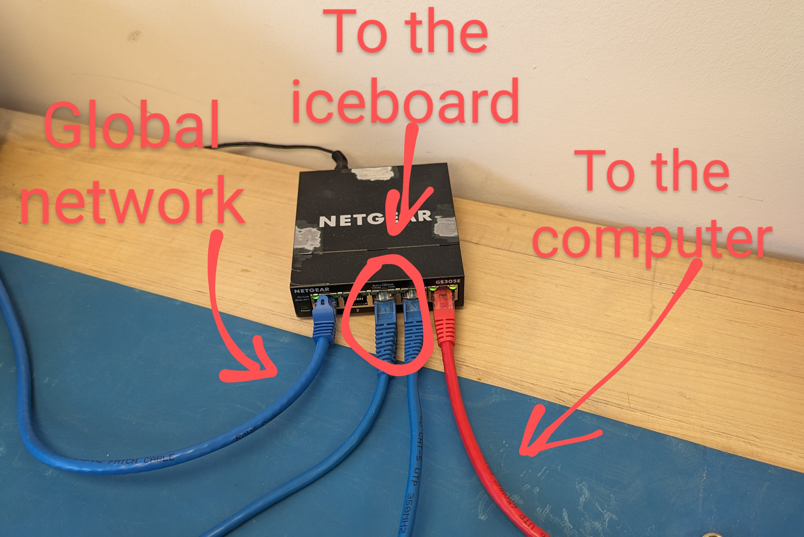
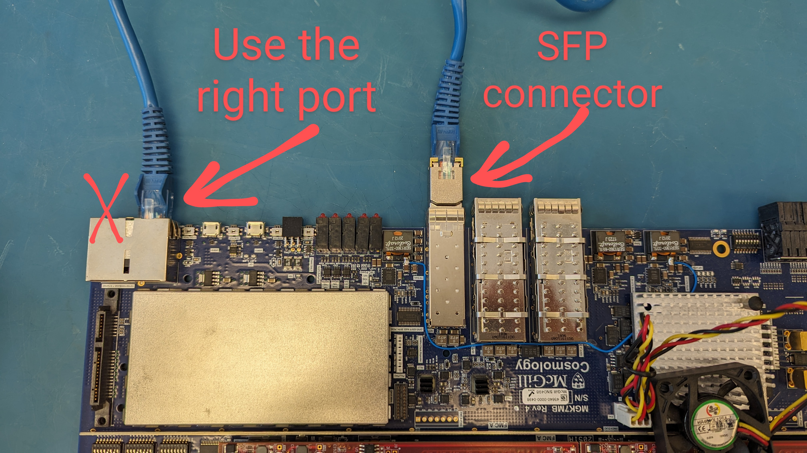
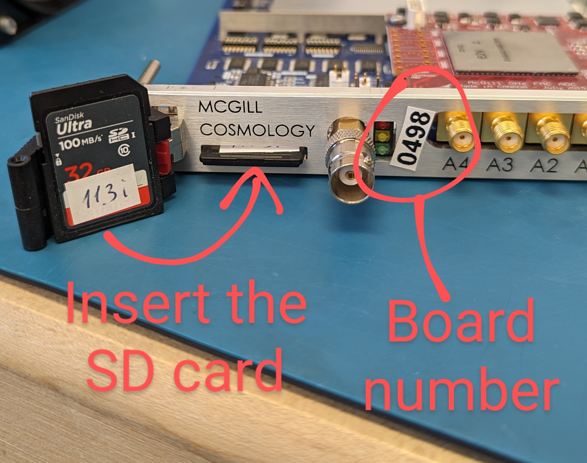

Pocket correlator guide
This guide includes all essential info and tips about running a single ICE board in a correlator mode.
Board overview
#TODO
Hardware setup


Example of the ICE board setup


Example of the ethernet wiring. You’ll need at least four cables and a gigabit switch


Connection ethernet cables to the ICE board


Front of the ICE board
Software installation
pychfpga is developed and tested on Ubuntu OS, so it is recommended to run this on Ubuntu. This guide was tested
on Ubuntu 22.04.
Getting access to pychfpga
First, create a BitBucket account if you don’t have one. Then, contact Jean-Francois Cliche at jfcliche@jfcliche.com to request access to the repository and other winterland dependencies and include the email for which your BitBucket account is registered. After getting access, it is necessary to add your ssh key to your BitBucket account.
Create a new ssh key by typing in a terminal:
cd
mkdir .ssh
ssh-keygen -t ed25519 -b 4096 .ssh/bitbucket_key
Leave the passphrase field empty (press Enter twice). Type:
cat .ssh/bitbucket_key_test.pub
and copy the output. Now you need to add the copied key to BitBucket. To do that, on BitBucket go Gear icon -> Personal BitBuket settings -> Security -> SSH keys -> Add key. You can put any label in the respective field. Paste the key copied from the terminal in the “Key” field.
Finally, add a created key to the ssh client. Run in terminal window:
eval `ssh-agent`
ssh-add .ssh/bitbucket_key
Creating an environment
The recommended version of Python to use is 3.8. You can install the older version of Python by typing in the terminal:
sudo add-apt-repository ppa:deadsnakes/ppa
sudo apt update
sudo apt install python3.8
To check that the Python is properly installed run. This should output the installed Python version:
python3.8 --version
It is recommended to create a separate directory for the pychfpga environment, for example:
mkdir icecorr
cd icecorr
Inside the directory, create a Python 3.8 virtual environment by running
sudo apt install python3.8-venv
python3.8 -m venv .venv_pychfpga
Now, anytime you are runing the ICE board, you should activate the created environment by running
source .venv_pychfpga/bin/activate
from the directory where the environment is located. In our case it is ~/icecorr.
Installing pychfpga
First, download the software by running the following in terminal:
git clone git@bitbucket.org:winterlandcosmology/pychfpga.git -b deploy
If you had issues with this step, you probably don’t have access to the repository. Check if you properly set up your BitBucket key an if you have permissions. If the command succeeded, go to the cloned repo:
cd pychfpga
Make sure the large files were cloned too:
sudo apt install git-lfs
git-lfs fetch
Now you need to find the latest version tested for a single board correlator. To do it, see the tags in the
pychfpga repository. The correct tag format for a single ICE board correlator would be
x.y.z+ice.co, where x, y and z are version numbers. To list all relevant tags run:
git tag --list '*.*.*+ice.co'
Then choose the latest available version. At the moment of writing, this version is 1.3.1+ice.co. Now you need
to switch to the selected version of the code by running the following command. You need to replace the
[selected_tag] with the version you selected in previous step.
git checkout [selected_tag]
While doing checkout, git may download additional files.
Now, it’s time to install the software. While in pychfpga directory, run
pip install -e .
If you had problems during installation - check if you’re using Python 3.8 and if you have access to all the winterland dependencies needed to install the software. For dependency access requests contact Jean-Francois Cliche at jfcliche@jfcliche.com.
After installation, you can run an fpga_master command to see if installation is complete
(it will throw an error for now).
Correlator configuration
The board is configured in the dedicated yaml file. You can find the example described here in the pychfpga/config/example_corr16.yaml. Please open that file for the reference. It is structured as follows:
- Lines 1-300 - a defined preset with default settings. Do not modify this part of the file.Some of the defined here properties will be overriden in the custom section.
- Lines 300-482 - a custom group of settings used for a specific application. In the example,the group is called “EXAMPLE”; when running a correlator, we will directly refer to thesesettings by this name.
We will now take a closer look at what parameters we should specify for a pocket correlator.
We follow the hierarchical structure of the setting from top to bottom. Only relevant parameters are described below; all the parameters that were not mentioned are better remaining untouched (unless you know what you are doing). The number in parentheses specifies the line number in the example config file.
- [303] EXAMPLE: - change the config group name for your convenience
- [306] corr_name: “EXAMPLE” is used in the created directory names for clarifica�on. Can be anything.
- [307] comment: “EXAMPLE, corr16 mode, one board” - provide more informa�on for futurereference.
- [309] data_folder: ‘~/EXAMPLE/data’ - specify the path where you want your data to be stored.All the additional directories will be automatically created inside.
- [321] hwm: ‘mb 498:1’ Hardware map. Must include ‘mb’ for a single ICE board and theID of the board used. The number after colon is used if you are using more than oneboard. keep it 1 for a single board.
- [352] fft_shift : 1367 - shift schedule for the FFT. Default is 1367 (0b10101010111 inbinary), but in general the right value is obtained after some tests to balance the noise andsaturation.
- [387] (compute gains:) enable: True - enable or disable computing gains. Generally, it is recommended tocalculate gains every time you run a correlator, unless you are sure that characteristics ofthe input signal will not change.
- [419] firmware_integration_period: 16384 - the integration period in frames inside theFPGA. ADCs sample with rate 800 Msps/s and each frame includes 2048 samples.Therefore each frame spans 0.00000256 s of time. Integration period of 16384 frames approximately equals 42 ms(precisely 41.94304 ms). It is not recommended to change thisvalue drastically. Instead, see software_integration_period.
- [423] software_integration_period: 250 - integrates the data pre-integrated by thefirmware; basically acts like a multiplier. 250 (sip) x 42 ms (fip) -> 10.5 s of totalintegration time.
Running the correlator
Make sure you have the latest stable firmware on your SD card. At the moment of writing it is
11.3iCheck network connection - your computer must be connected by ethernet cable to a gigabit switch that supports jumbo frames.
ifconfig
- Make sure that the connection you have is set to mtu 9000. If not, on Ubuntu you can navigate:
Ethernet Connection >> Edit Connections >> Ethernet >> [name of connection] >> Ethernet >> MTUand set MTU to 9000.Alternatively, run in terminalsudo ifconfig [name of connection] mtu 9000
Runifconfigagain to check the MTU. Set proper UDP buffer size on system by running (the following should be a single line command):
sudo sysctl -w net.core.rmem_max=26214400 net.core.rmem_default=26214400 net.ipv4.udp_mem='26214400 26214400 26214400' net.ipv4.udp_rmem_min=26214400
- Make sure your DHCP server (e.g. router) has a /16 (255.255.0.0) netmask. Otherwise you won’t be able to reach tothe FPGA and will get “FPGA command timeout” errors.
Activate a virtual environment you set up for
pychfpga(if not already activated)Open a separate terminal and run the raw data acquisition server:
chime_raw_acq
- Open a separate terminal and run
fpga_masterwith config you edited before:fpga_master [path to your config.yaml]/config.yaml:[your config name]
The config name is whatever you entered in line 303. Assuming the current workin directory ispychfpga,the command for the example file would look something like this:fpga_master ./config/example_corr16.yaml:EXAMPLE
It will take some time for the script to find and configure the board
Reading the data
#TODO